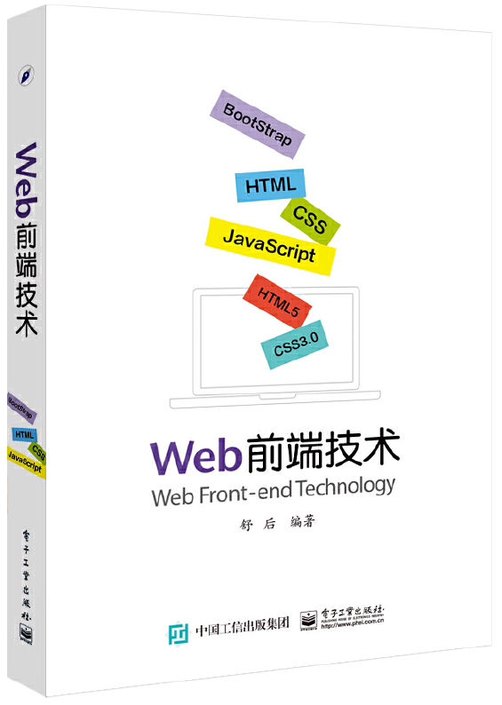

首页 > 书籍下载
《Web前端技术》PDF下载（高清完整版）
|  | 作者：舒后 |
| 出版时间：2016年08月01日 | |
| 出版社：电子工业出版社 | |
| ISBN：9787121297328 | |
| 总页数：332 | |
| 总字数：53.1W |
这是一本关于 Web 前端开发的书，本书全面、系统地介绍了网页设计的核心技术——HTML、CSS 和 JavaScript，适合在校学生以及业内人士。
这里提供的是《Web前端技术》的高清 PDF 下载，内容完整，附带目录标签。
这本书不仅讲了网页前端技术的核心与关键，也含盖了网页设计工作的必备技能。HTML、CSS 和 JavaScript 是网页设计的三大基础，要想在 Web 前端领域发展下去，这三个版块必须要吃透、弄懂，然后再配合实际项目的操作，来提升我们的开发技能。
《Web前端技术》相比于其它的基础类丛书，它最大的特色是：
引入网页前端技术的前沿（响应式网页设计），介绍当前最为流行的前端设计框架—— Bootstrap，包括它的安装及具体使用，并通过一个具体案例，详细介绍了 Bootstrap 框架的响应式网站设计及实现过程。
书籍目录
- 第1章 网页设计基础知识
- 1．1 相关知识
- 1．2 Web前端开发技术
- 第2章 HTML基础
- 2．1 HTML的概念
- 2．2 HTML的基本语法
- 2．3 HTML的文档结构
- 2．4 HTML的头部文件和主体文件
- 习题
- 第3章 网页文字与排版设计
- 3．1 编辑网页内容
- 3．2 文字效果与修饰
- 3．3 段落与排版
- 3．4 建立列表
- 3．5 文字网页综合实例
- 习题
- 第4章 超链接的使用
- 4．1 超链接简介
- 4．2 超链接的路径
- 4．3 超链接的应用
- 4．4 设置图像映射
- 4．5 其他链接
- 4．6 综合实例
- 习题
- 第5章 表格的使用
- 5．1 创建表格
- 5．2 设置表格属性
- 5．3 设置单元格
- 5．4 表格嵌套
- 5．5 综合实例
- 习题
- 第6章 网页框架设计
- 6．1 框架
- 6．2 框架的设置
- 6．3 框架集的设置
- 6．4 框架的嵌套
- 6．5 不支持框架
- 6．6 浮动框架
- 6．7 设置框架的链接
- 6．8 框架的综合应用
- 习题
- 第7章 层的应用
- 7．1 创建层
- 7．2 层的属性
- 7．3 嵌套层
- 7．4 ＜span＞标签的使用
- 7．5 综合应用
- 习题
- 第8章 表单的使用
- 8．1 表单
- 8．2 输入标签＜input＞
- 8．3 表单综合实例
- 习题
- 第9章 HTML5基本介绍
- 9．1 认识HTML
- 9．2 HTML5的新功能
- 9．3 新增标签介绍
- 9．4 Web存储
- 第10章 CSS语法基础
- 10．1 CSS的简介
- 10．2 CSS的基本语法
- 10．3 CSS选择符的类型
- 10．4 选择符的优先级
- 10．5 应用CSS样式表
- 习题
- 第11章 CSS设置文字与版式
- 11．1 字体属性的设置
- 11．2 文本的版式控制（文本排版）
- 习题
- 第12章 颜色和背景
- 12．1 颜色color
- 12．2 页面背景background
- 习题
- 第13章 CSS盒子模型
- 13．1 盒模型简介
- 13．2 边框属性
- 13．3 边距属性
- 13．4 圆角边框
- 习题
- 第14章 定位和布□
- 14．1 CSS元素定位
- 14．2 CSS布□属性
- 14．3 其他页面元素的设置
- 习题
- 第15章 CSS滤镜特效
- 15．1 概述
- 15．2 视觉滤镜
- 习题
- 第16章 JavaScript基础
- 16．1 JavaScript简介
- 16．2 JavaScript基本语法
- 16．3 JavaScript流程控制语句
- 16．4 函数
- 习题
- 第17章 JavaScript的对象和事件
- 17．1 JavaScript的对象
- 17．2 JavaScript的事件处理方式
- 习题
- 第18章 Web前端新技术――响应式网页的设计与实现
- 18．1 响应式网页技术
- 18．2 前端开发框架
- 18．3 Bootstrap框架
- 18．4 基于数字媒体技术专业网站的设计与实现
- 18．5 小结
- 参考文献
- 习题答案（选择题）
书籍下载
一键登录，免费下载完整版 PDF，文件名称：《Web前端技术》.pdf